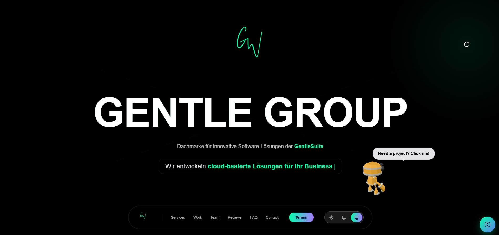

Gentle Group is a sophisticated, modern landing page platform built with cutting-edge web technologies. This high-performance application showcases the latest in React and Next.js development, featuring server-side rendering, static generation, and optimized delivery through Vercel. The platform demonstrates excellence in modern web development practices with a focus on performance, security, and user experience.

Technology Stack Analysis:
JavaScript Frameworks:
- React - Modern JavaScript library for building user interfaces with component-based architecture
- Next.js 14.2.5 - Full-stack React framework with server-side rendering, static site generation, and API routes
Security Features:
- HSTS (HTTP Strict Transport Security) - Enforces secure HTTPS connections and prevents protocol downgrade attacks
- Next.js Security Headers - Built-in security features and headers for enhanced protection
Web Frameworks:
- Next.js 14.2.5 - Comprehensive web framework offering file-based routing, API routes, middleware, and optimization features
Development Tools & Libraries:
- lit-html 3.2.1 - Efficient, expressive, and extensible HTML templating library
- lit-element 4.1.1 - Simple base class for creating fast, lightweight web components
- Framer Motion - Production-ready motion library for React, creating smooth animations and gestures
Platform & Infrastructure:
- Vercel - Cloud platform for static sites and serverless functions, optimized for Next.js applications
- Static Site Generator - Next.js static generation for blazing-fast page loads and optimal performance
UI Framework & Styling:
- Tailwind CSS - Utility-first CSS framework for rapidly building custom designs without leaving HTML
Social & Metadata:
- Open Graph - Protocol for integrating web pages into social media platforms with rich previews
- Web Savant - Advanced web development techniques and optimizations
Key Technical Features:
- Server-Side Rendering (SSR): Next.js provides server-side rendering capabilities for improved SEO and faster initial page loads
- Static Site Generation (SSG): Pre-renders pages at build time for optimal performance and reduced server load
- Performance Optimization: Automatic code splitting, image optimization, and font optimization out of the box
- Responsive Design: Built with Tailwind CSS for fully responsive layouts across all device sizes
- Fast Refresh: Next.js Fast Refresh provides instant feedback on edits during development
- File-Based Routing: Intuitive routing system based on file structure in the pages directory
- Security Best Practices: Built-in security features including HSTS, CSP, and XSS protection
- API Routes: Full-stack capabilities with API endpoints built into the same project
Development Advantages:
- Vercel Integration: Seamless deployment with automatic optimizations, preview deployments, and analytics
- TypeScript Support: Full TypeScript integration for type-safe development and better code quality
- Component-Based Architecture: Modular React components for maintainable and scalable codebase
- Incremental Static Regeneration: Update static content after build time without needing a full rebuild
- SEO Optimized: Built-in SEO features with server-side rendering and meta tag management
- Internationalization: Built-in i18n routing and localization support
- Analytics Integration: Easy integration with analytics platforms through middleware and API routes
- Scalability: Architecture designed to scale from small projects to enterprise applications
Performance Metrics:
- High Performance Score: Optimized for Core Web Vitals (LCP, FID, CLS)
- Fast Loading Times: Static generation and CDN delivery through Vercel's global edge network
- Mobile Optimization: Responsive images and layouts optimized for mobile devices
- Low Bandwidth Usage: Code splitting and optimized asset delivery
- Efficient Caching: Intelligent caching strategies for repeat visits
Deployment & Hosting:
- Vercel Platform: Automatic deployments from Git, preview environments, and rollback capabilities
- Global CDN: Content delivered through Vercel's global edge network for low latency worldwide
- SSL/TLS Encryption: Automatic HTTPS with Let's Encrypt certificates
- Analytics & Monitoring: Built-in analytics for performance monitoring and user behavior tracking
- Automatic Scaling: Serverless functions automatically scale based on traffic demands